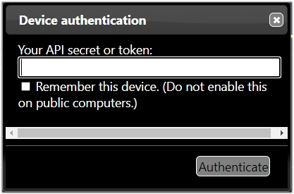

Overview⌁
You will have to declare meals, mealtime insulins and long-acting insulin agonists in Nightscout, in order for CGMSIM to make calculations. For this, you will have to authorize the device, on which you declare these events.
Careportal⌁
On the top right corner of your Nightscout website, you should see a lock.

Click on the lock and you will be prompted to enter your API secret:

Enter your API secret or "Nightscout password". Tick "Remember this device", so you won't have to do this every time, and click Authenticate. You will have to repeat this step whenever you open your Nightscout website on a different browser or device.
When it's done, the lock on the upper-right corner has been replaced with a "+" mark.

Let's move on to declare our first meal.